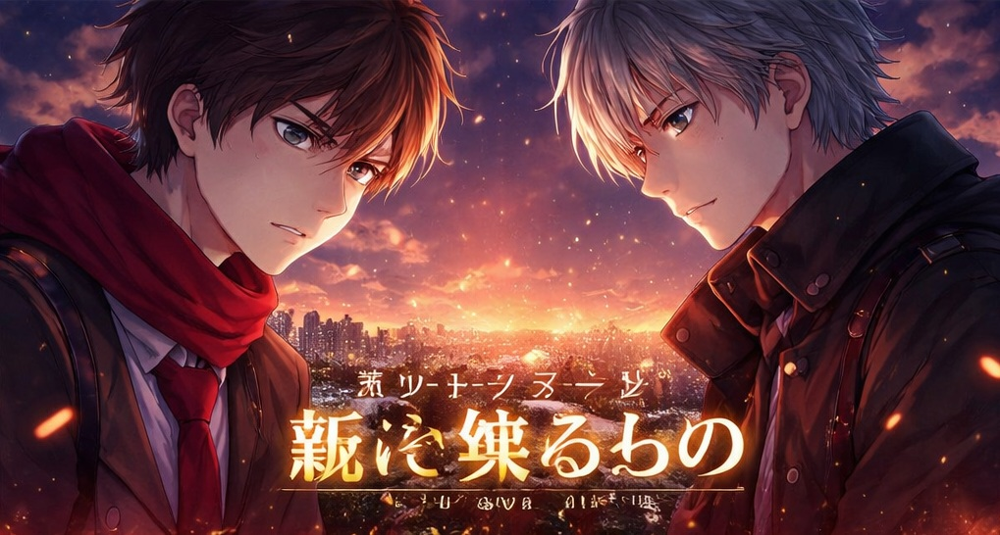
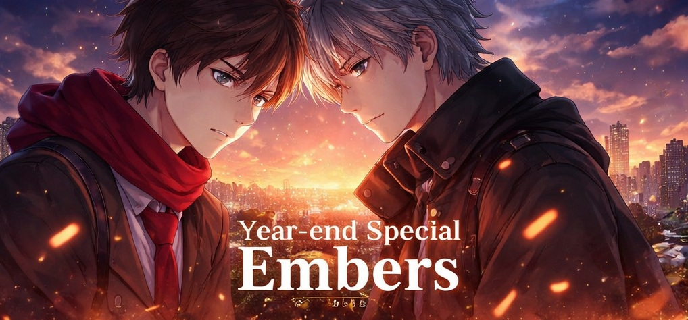

歳末スペシャル『燃え残るもの』
歳末スペシャル『ひかりのくすり』番外編で12月31日投稿予定 | 「悲しさ・くやしさによって、到達目標だったものが“夢”へと変質する瞬間 を捉える」 成功と失敗の対比ではなく、“同じ夢が、別の形で残った二人” を描きます。

Year-end special "Embers"
Scheduled to be posted on December 31st in the year-end special "Hikari no Kusuri" extra edition | "Capturing the moment when what was a goal is transformed into a 'dream' due to sadness and sadness", it depicts "two people who remain with the same dream in a different form" rather than a contrast between success and failure.